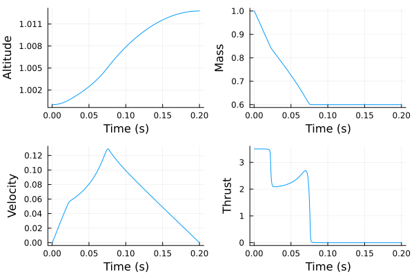

Example: nonlinear optimal control of a rocket
This tutorial was generated using Literate.jl. Download the source as a .jl file.
This tutorial was originally contributed by Iain Dunning.
This tutorial demonstrates how to formulate and solve a nonlinear optimal control problem in JuMP using Ipopt, with a discretized rocket trajectory as the worked example.
Learning intentions:
- Transcribe a continuous-time optimal control problem into a finite nonlinear program by discretizing the dynamics as equality constraints
- Use
fixto enforce boundary conditions and supply a good initial guess to help the nonlinear solver converge - Visualise the state and control trajectories and see how changing the number of time steps affects accuracy and solve time
The JuMP extension InfiniteOpt.jl can also be used to model and solve optimal control problems.
Required packages
This tutorial uses the following packages:
using JuMPimport Ipoptimport PlotsOverview
Our goal is to maximize the final altitude of a vertically launched rocket.
We can control the thrust of the rocket, and must take account of the rocket mass, fuel consumption rate, gravity, and aerodynamic drag.
Let us consider the basic description of the model (for the full description, including parameters for the rocket, see COPS3).
There are three state variables in our model:
- Velocity: $x_v(t)$
- Altitude: $x_h(t)$
- Mass of rocket and remaining fuel, $x_m(t)$
and a single control variable:
- Thrust: $u_t(t)$.
There are three equations that control the dynamics of the rocket:
- Rate of ascent: $\frac{d x_h}{dt} = x_v$
- Acceleration: $\frac{d x_v}{dt} = \frac{u_t - D(x_h, x_v)}{x_m} - g(x_h)$
- Rate of mass loss: $\frac{d x_m}{dt} = -\frac{u_t}{c}$
where drag $D(x_h, x_v)$ is a function of altitude and velocity, gravity $g(x_h)$ is a function of altitude, and $c$ is a constant.
These forces are defined as:
\[D(x_h, x_v) = D_c \cdot x_v^2 \cdot e^{-h_c \left( \frac{x_h-x_h(0)}{x_h(0)} \right)}\]
and $g(x_h) = g_0 \cdot \left( \frac{x_h(0)}{x_h} \right)^2$
We use a discretized model of time, with a fixed number of time steps, $T$.
Our goal is thus to maximize $x_h(T)$.
Data
All parameters in this model have been normalized to be dimensionless, and they are taken from COPS3.
h_0 = 1 # Initial heightv_0 = 0 # Initial velocitym_0 = 1.0 # Initial massm_T = 0.6 # Final massg_0 = 1 # Gravity at the surfaceh_c = 500 # Used for dragc = 0.5 * sqrt(g_0 * h_0) # Thrust-to-fuel massD_c = 0.5 * 620 * m_0 / g_0 # Drag scalingu_t_max = 3.5 * g_0 * m_0 # Maximum thrustT_max = 0.2 # Number of secondsT = 1_000 # Number of time stepsΔt = 0.2 / T; # Time per discretized stepJuMP formulation
First, we create a model and choose an optimizer. Since this is a nonlinear program, we need to use a nonlinear solver like Ipopt. We cannot use a linear solver like HiGHS.
model = Model(Ipopt.Optimizer)set_silent(model)Next, we create our state and control variables, which are each indexed by t. It is good practice for nonlinear programs to always provide a starting solution for each variable.
@variable(model, x_v[1:T] >= 0, start = v_0) # Velocity@variable(model, x_h[1:T] >= 0, start = h_0) # Height@variable(model, x_m[1:T] >= m_T, start = m_0) # Mass@variable(model, 0 <= u_t[1:T] <= u_t_max, start = 0); # ThrustWe implement boundary conditions by fixing variables to values.
fix(x_v[1], v_0; force = true)fix(x_h[1], h_0; force = true)fix(x_m[1], m_0; force = true)fix(u_t[T], 0.0; force = true)The objective is to maximize altitude at end of time of flight.
@objective(model, Max, x_h[T])\[ x\_h_{1000} \]
Forces are defined as functions:
D(x_h, x_v) = D_c * x_v^2 * exp(-h_c * (x_h - h_0) / h_0)g(x_h) = g_0 * (h_0 / x_h)^2g (generic function with 1 method)The dynamical equations are implemented as constraints.
ddt(x::Vector, t::Int) = (x[t] - x[t-1]) / Δt@constraint(model, [t in 2:T], ddt(x_h, t) == x_v[t-1])@constraint( model, [t in 2:T], ddt(x_v, t) == (u_t[t-1] - D(x_h[t-1], x_v[t-1])) / x_m[t-1] - g(x_h[t-1]),)@constraint(model, [t in 2:T], ddt(x_m, t) == -u_t[t-1] / c);Now we optimize the model and check that we found a solution:
optimize!(model)assert_is_solved_and_feasible(model)solution_summary(model)solution_summary(; result = 1, verbose = false)
├ solver_name : Ipopt
├ Termination
│ ├ termination_status : LOCALLY_SOLVED
│ ├ result_count : 1
│ └ raw_status : Solve_Succeeded
├ Solution (result = 1)
│ ├ primal_status : FEASIBLE_POINT
│ ├ dual_status : FEASIBLE_POINT
│ ├ objective_value : 1.01278e+00
│ └ dual_objective_value : 4.66547e+00
└ Work counters
├ solve_time (sec) : 2.01649e-01
└ barrier_iterations : 24Finally, we plot the solution:
function plot_trajectory(y; kwargs...) return Plots.plot( (1:T) * Δt, value.(y); xlabel = "Time (s)", legend = false, kwargs..., )endPlots.plot( plot_trajectory(x_h; ylabel = "Altitude"), plot_trajectory(x_m; ylabel = "Mass"), plot_trajectory(x_v; ylabel = "Velocity"), plot_trajectory(u_t; ylabel = "Thrust"); layout = (2, 2),)
Next steps
- Experiment with different values for the constants. How does the solution change? In particular, what happens if you change
T_max? - The dynamical equations use rectangular integration for the right-hand side terms. Modify the equations to use the Trapezoidal rule instead. (As an example,
x_v[t-1]would become0.5 * (x_v[t-1] + x_v[t]).) Is there a difference?